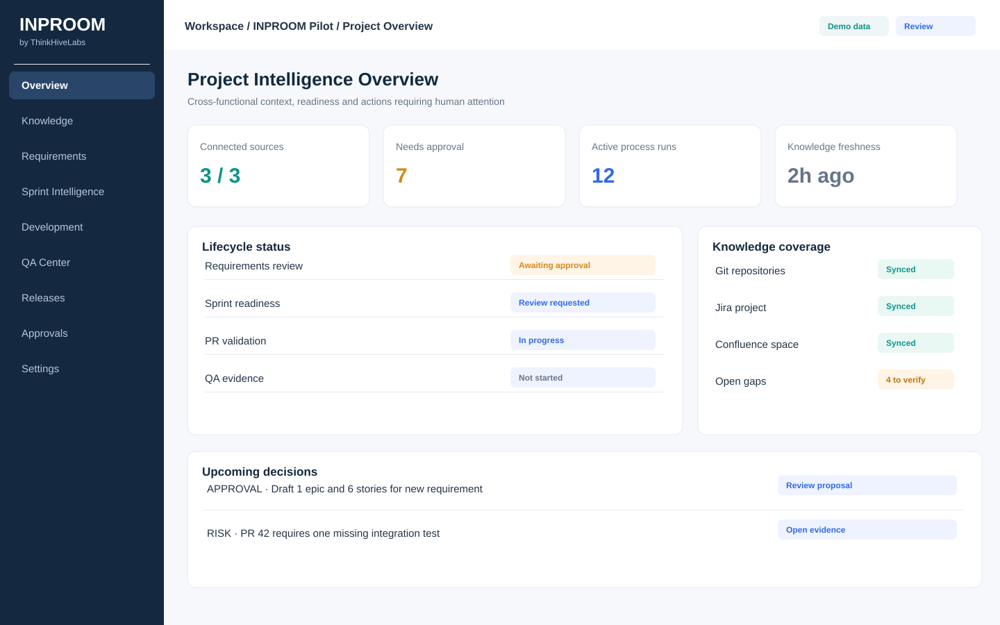

Experience concepts
Review the information hierarchy for the SDLC-first, STLC-second product. These are illustrative screens, not a connected application.

Overview: project health, source freshness, approvals, and pending decisions.
Review the information hierarchy for the SDLC-first, STLC-second product. These are illustrative screens, not a connected application.
